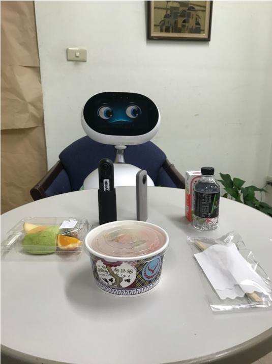

Poster Presentation
Hsu, L. J., Wang, G. Y., Hu, Y. H., Lu, M. H., Lin, Y. H., Lin, W., & Yueh, H. P. (2019, October). Investigating older adults’ technological needs for social activities, paper accepted for Poster presentation at the 11th International Association of Gerontology and Geriatrics Asia/Oceania Regional Congress, 23-27 October, Taipei, Taiwan.
Highlight Works
Hsu, L. J. & Yueh, H. P. (2020). Social presence on emotion, behavior, and social support: When older adults eat with social robot and stuffed animal. Manuscript in Preparation.

Eating alone is a significant issue for older adults due to its potential for physical and psychological risks. It is correlated with feeling a lack of support, negative emotions, and eating less. In this study, the prototype of the robot was designed based on the constructs of social presence, social support, emotions, and eating behavior. 22 participants ages 59-74 living alone or with their spouse without children experienced eating with a robot prototype and assessed it in comparison to the stuffed animal. Assessment methods include self- assessments, psychophysiological measures (such as EEG), behavioral measures, and interviews.
Hsu, L. J. & Yueh, H. P. (2020). Studying the acceptance of an eating robot with the UTAUT model. Manuscript in Preparation.
In this study, we proposed the solution to eating with a robot. First, a survey based on the UTAUT model was conducted with 1532 Taiwanese 20 years or older to understand their perception of the proposed scenario. The survey results indicate that performance expectancy, effort expectancy, and social influence have significant effects on the general public for intention to use the robot for eating; performance expectancy and social influence were specifically for elders.
Among the various activities people chose to interact on the Internet, an increasing amount of people are sharing and communicating through food photographs. But what a difference would a food diary bring? Six Baby Boomers were instructed to take food photographs, describe and record their feelings and experience through a selection of words or written words on their mealtime environment, three times per day, for one week with the Recovery Record app on their mobile phones. We conducted a focus-group interview after. As a result, participants seemed satisfied and improved on their overall well-being. Moreover, they also suggested several functions to improve the app, such as sharing photographs with friends.